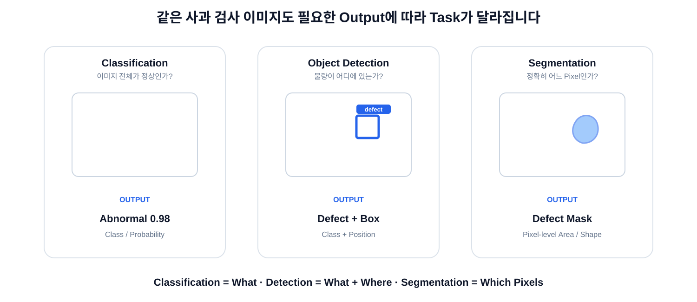
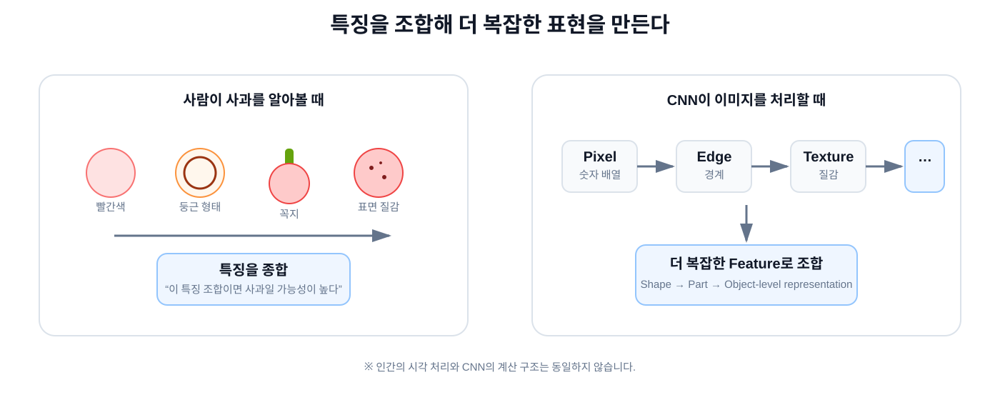

Lecture 03 · Vision AI
Vision AI는 무엇을 보고, 무엇을 예측할까?
같은 이미지라도 “무엇을 알고 싶은가?”에 따라 Classification, Detection, Segmentation, Tracking, Depth처럼 문제 정의가 달라집니다.

1
먼저 Task를 정하고, 그 다음 모델을 고릅니다
“무슨 모델을 쓸까?”보다 “무엇을 출력해야 할까?”가 먼저입니다.
문제 정의
↓
원하는 Output
↓
Vision Task
↓
Model Architecture
↓
Dataset / Label 설계
Classification / Detection / Segmentation은 엄밀히는 Task이고, 실제 구현에서는 흔히 “분류 모델”, “검출 모델”처럼 부릅니다.
2
Classification — 이 이미지가 무엇인가?
Image
↓
Model
↓
Normal 0.03
Abnormal 0.97
Output이미지 전체에 대한 Class 또는 Probability
산업 예시
- 제품 정상 / 불량 판정
- 불량 종류 분류
- 부품 종류 식별
- 공정 상태 분류
장점: Label이 비교적 간단합니다.
한계: 불량이 “어디에 있는지”는 직접 알려주지 않습니다.
한계: 불량이 “어디에 있는지”는 직접 알려주지 않습니다.
3
Object Detection — 무엇이 어디에 있는가?
Image
↓
Detection Model
↓
Class
+ Bounding Box
+ Confidence
Bounding Box물체의 위치를 사각형 영역으로 표현합니다.
산업 예시
- 결함 위치 찾기
- 부품 존재 / 누락 검출
- 여러 객체 동시 검출
- 관심 ROI 자동 지정
위치 정보가 필요하지만 정확한 Pixel 형상까지는 필요하지 않을 때 적합합니다.
4
Segmentation — 정확히 어느 Pixel인가?
Image
↓
Segmentation Model
↓
Pixel Mask
Mask어떤 Pixel이 관심 물체 또는 영역에 속하는지 표시한 결과입니다.
산업 예시
- 결함 면적 측정
- 물체 실제 형상 추출
- 윤곽 기반 치수 계산
- 복잡한 형태의 ROI 생성
Detection = Box
Segmentation = Pixel-level Shape
Segmentation = Pixel-level Shape
5
Tracking — 영상에서 같은 물체를 계속 따라가기
Frame 1 → ID 3
Frame 2 → ID 3
Frame 3 → ID 3
↓
Trajectory / Speed / Event
Tracking시간이 지나도 같은 객체에 같은 ID를 연결하는 문제입니다.
- 물체 이동 경로
- 체류 시간
- 통과 개수
- 움직임 기반 이상 상태
6
Depth / 3D — 얼마나 멀리 있고 공간이 어떻게 생겼는가?
Depth Map각 Pixel 위치에 카메라와 물체 사이 거리를 저장합니다.
Point Cloud공간을 (x, y, z) 형태의 3차원 점 집합으로 표현합니다.
- 두 물체 사이 거리
- 충돌 가능성 판단
- 높이 / 부피 측정
- 로봇 공간 인식
RGB 하나로 해결하기 어려운 문제는 Depth Camera, Stereo, LiDAR 같은 센서 정보가 필요할 수 있습니다.
7
산업 문제를 Vision Task로 바꿔보면
| 현장 질문 | 주요 Task | 대표 Output |
|---|---|---|
| 제품이 정상인가? | Classification | Class / Probability |
| 불량이 어디에 있는가? | Detection | Bounding Box |
| 불량 면적이 얼마나 되는가? | Segmentation | Pixel Mask / Area |
| 영상에서 물체가 어떻게 움직이는가? | Tracking | ID / Trajectory |
| 두 물체 사이 거리는 얼마인가? | Depth / 3D | Distance / Point Cloud |
문제 정의가 Label 방식과 평가 지표까지 결정합니다.
8
그럼 모델은 이미지에서 무엇을 보고 판단할까?
사람은 색, 윤곽, 질감, 부분 구조 같은 여러 시각적 단서를 종합합니다.
빨간색
+ 둥근 윤곽
+ 꼭지
+ 표면 질감
↓
특징 조합
↓
“사과 같다”
※ 인간의 시각 처리와 CNN의 계산 구조는 동일하지 않습니다.
9
CNN — 작은 특징을 조합해 더 큰 의미를 만든다

10
CNN의 Feature Hierarchy
처음에는 작은 지역 패턴을 보고, Layer가 깊어질수록 더 복잡한 특징을 조합합니다.
Pixel
↓
Edge / 방향
↓
Texture / 반복 패턴
↓
Shape
↓
Object Part
↓
Object-level Feature
실제 Feature는 사람이 붙인 의미와 1:1로 대응하지 않을 수 있습니다.
11
Kernel과 Convolution
Kernel / Filter이미지의 작은 영역에서 패턴을 추출하기 위한 학습 가능한 Weight입니다.
3 × 3 Kernel
[ w₁ w₂ w₃ ]
[ w₄ w₅ w₆ ]
[ w₇ w₈ w₉ ]
Convolution같은 Kernel을 이미지 여러 위치에 적용해 패턴 반응을 계산합니다.
작은 Image Patch
×
Kernel
↓
곱하고 더함
↓
Feature 값
12
Feature Map과 Channel
Feature Map특정 Kernel이 각 위치에서 얼마나 반응했는지를 나타내는 출력입니다.
224 × 224 × 3
↓
64 Filters
↓
224 × 224 × 64
Channel서로 다른 Feature Map을 쌓아 놓은 축입니다.
Filter 1 → Map 1
Filter 2 → Map 2
...
Filter 64 → Map 64
13
깊어질수록 더 넓은 문맥을 봅니다
Receptive Field특정 Feature가 원본 이미지에서 영향을 받는 영역입니다.
3×3 Conv 1 layer → 약 3×3
3×3 Conv 2 layers → 약 5×5
3×3 Conv 3 layers → 약 7×7
DownsamplingFeature Map의 공간 크기를 줄여 연산량을 줄이고 더 넓은 문맥을 효율적으로 표현합니다.
224×224×64
↓
112×112×128
↓
56×56×256
14
CNN도 Dataset으로 “볼 특징”을 학습합니다
Image + Label
↓
CNN Forward
↓
Prediction
↓
Loss
↓
Backpropagation
↓
Kernel Weight Update
사람이 모든 Filter를 직접 설계하지 않습니다.
Task의 Loss가 줄어들도록 Kernel Weight가 학습되면서 문제 해결에 유용한 Feature가 만들어집니다.
15
Vision AI를 한 흐름으로 정리하면
현장 문제
↓
어떤 Output이 필요한가?
↓
Classification / Detection / Segmentation / Tracking / 3D
↓
Dataset + Label
↓
CNN 같은 Feature Extractor / Model Architecture
↓
Training
↓
Evaluation
↓
Deployment
모델 이름보다 먼저 문제와 Output을 정의하는 것이 Vision AI 개발의 출발점입니다.